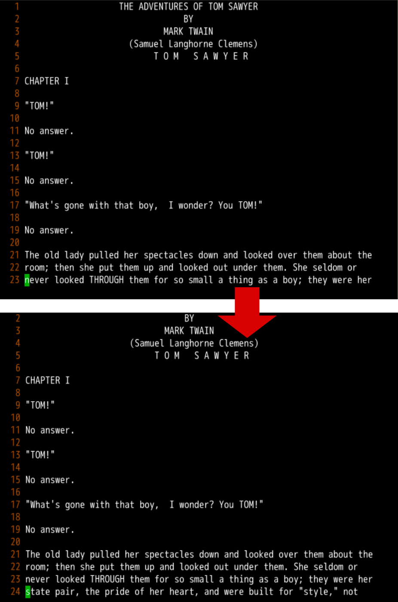
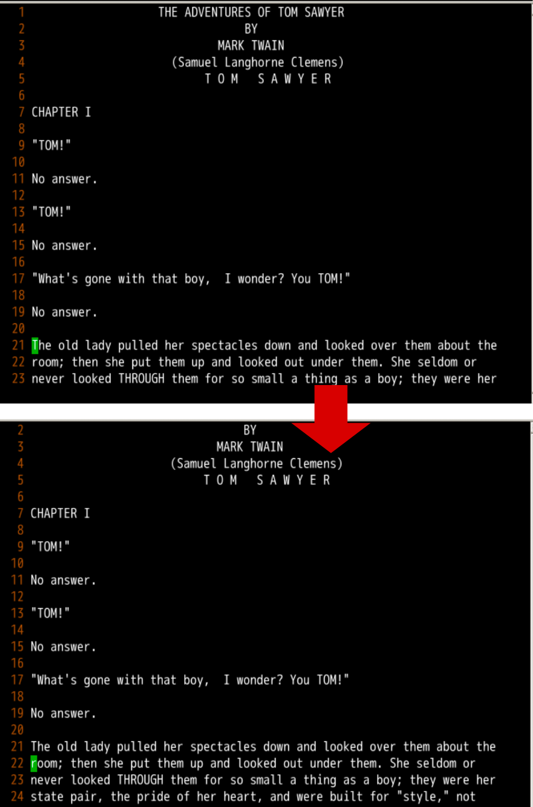
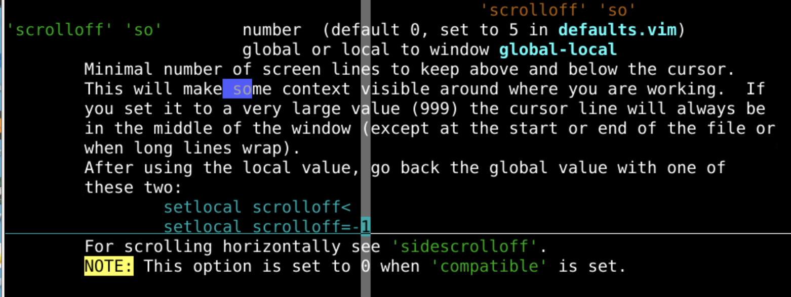
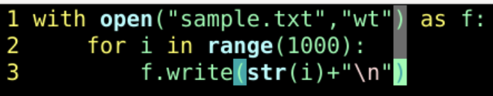
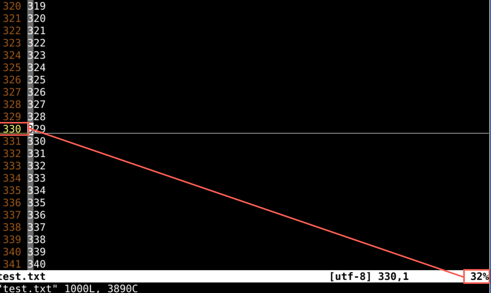
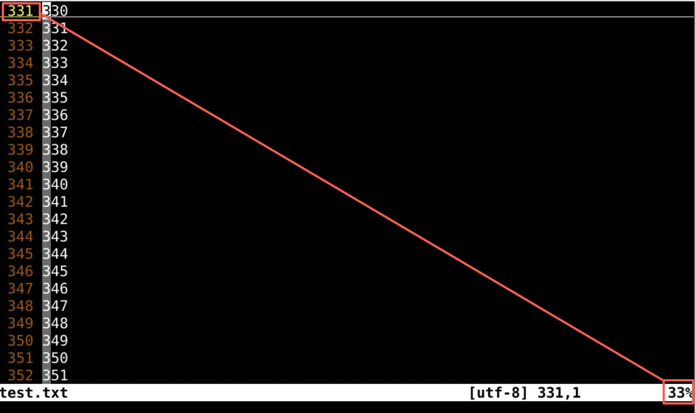
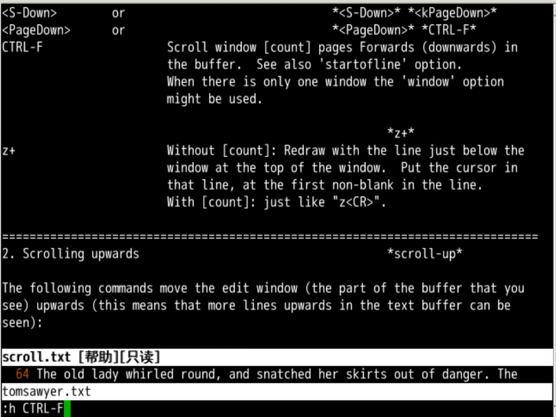
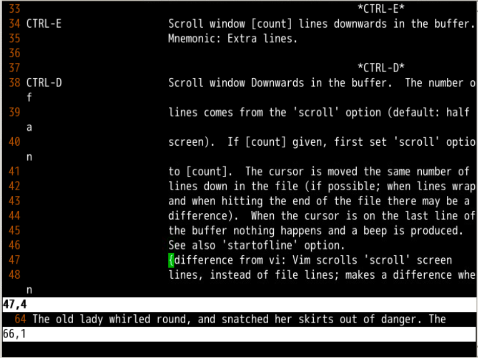
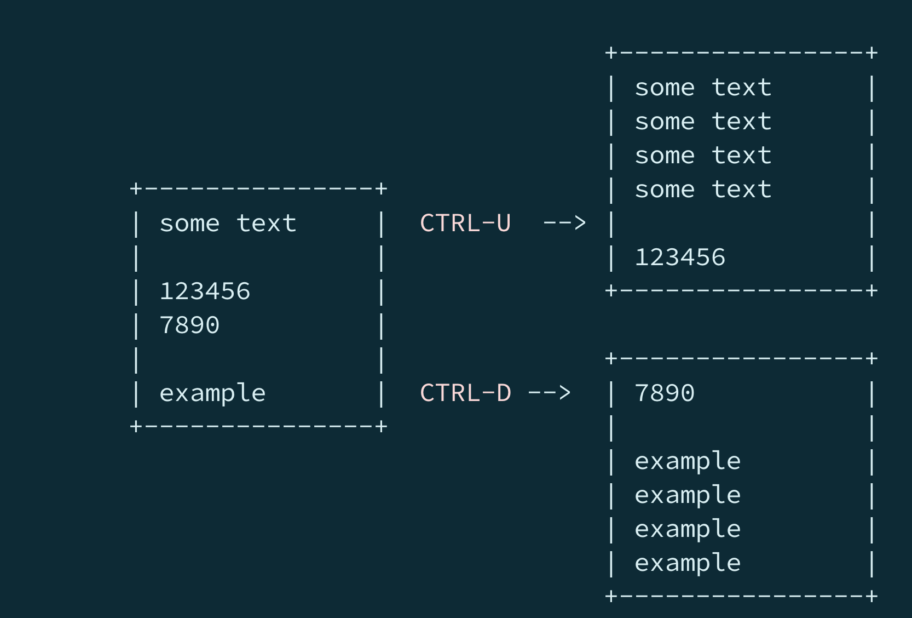

垂直翻页
回忆上节课内容🤔
- 我们上次了解了横向滚动的相关信息
- 横滚幅度 -
sidescroll
- 横滚留位 -
sidescrolloff
- 自动换行 -
wrap
- g j、g k 可以逐行上下移动
- 可以控制切换行的控制键
whichwrap
- 这就是横向移动的内容
- 不过程序中一般一行不会超过80个字符
- 纵向移动更为普遍
- 纵向移动有什么好玩的吗？🤔
- 我们先下载个长点的文档
git clone http://gitee.com/overmind1980/oeasyvim.git- 然后用无模式的方式打开他
vi -u NONE tomsawyer.txt
边缘移动
- 首先设置非兼容
:set nocompatible
- 然后设置显示行号
:se nu
- 2 3 G 到 23 行
- j 再向下的时候
- 屏幕发生滚动，光标位置如图

上下留边
- 上下留边的话就要用
:set scrolloff=2
- 这样的话上下翻动的话，都会有
2 行的预留
:h scrolloff 查看帮助s[croll]o[ff] 管的纵向保留边距- 俗称留天留地

留边细节
scrolloff 是一个 option- 可以设定最小值
- 还可以查询细节
:h 'scrolloff'

scrolloff 管的是 纵向 留天留地sidescrolloff 管的是 横向 留天留地- 也可以用
HML 命令测试一下
- H 到当前屏幕能到的最上行 High
- M 到当前屏幕正中 Middle
- L 到当前屏幕能到的最下行 Low
百分比的细节
- 为了明确这个百分比的细节
- 我们写个python文件写一个1000行的文件

- 然后运行他
- !python %
- 最后打开运行得到的文本文件
打开文件


- 再调整当前行位置
- 可以看到右下角的百分比是和左上角的行号相关联的
上下翻页

- 在
scroll.txt 可以找到 :h CTRL-F
- 使用 ctrl + f 可以向下走
f 的含义是 forward 向下走- 同理
b 的含义是 backward 向上走
- ctrl + b 可以向上走
- 在翻页之前加上数字 [count] 可以实现一次翻 10 页
- 如1 0 ctrl + f
- 或1 0 ctrl + b
- 注意观察cmd的位置
向上 N 行
- 我们可以用 ctrl + e 向下 1 行
- ctrl + e 和 j 的不同是
- ctrl + e 光标所在文件位置不变，整个屏幕向上，除非到了边缘，光标位置才改变
- j 是屏幕整个位置不变，光标位置向下，除非到了边缘，屏幕位置才改变

- 同理可以ctrl + y 屏幕向下移动
- 他们都可以使用
[count] 来翻倍
翻过半屏
- ctrl + d 可以向下走 翻半屏 d 代表 Down
- ctrl + u 可以向上走 翻半屏 u 代表 Up
- 默认翻的是半屏，但是也可以通过
scroll 来设置
:set scroll=5 来明确翻的行数- 翻页的时候，光标在屏幕的相对位置不变，屏幕整体向上或向下移动

总结
- 这次我们主要讲的翻页
:set scrolloff=2 控制留天留地- 上下翻页(这个最常用)
- ctrl + f 屏幕向上走一屏
- ctrl + b 屏幕向下走一屏
- 上下移屏一行
- ctrl + e 屏幕向上走一行
- ctrl + y 屏幕向下走一行
- 上下移屏一段
- ctrl + u 向上走半屏
- ctrl + d 向下走半屏
- 移动数量和
scroll 相关
- 上述翻页都可以用
[count] 翻倍
- 如果想屏幕相对文件位置不动
- 可以么？🤔
- 下次再说 👋